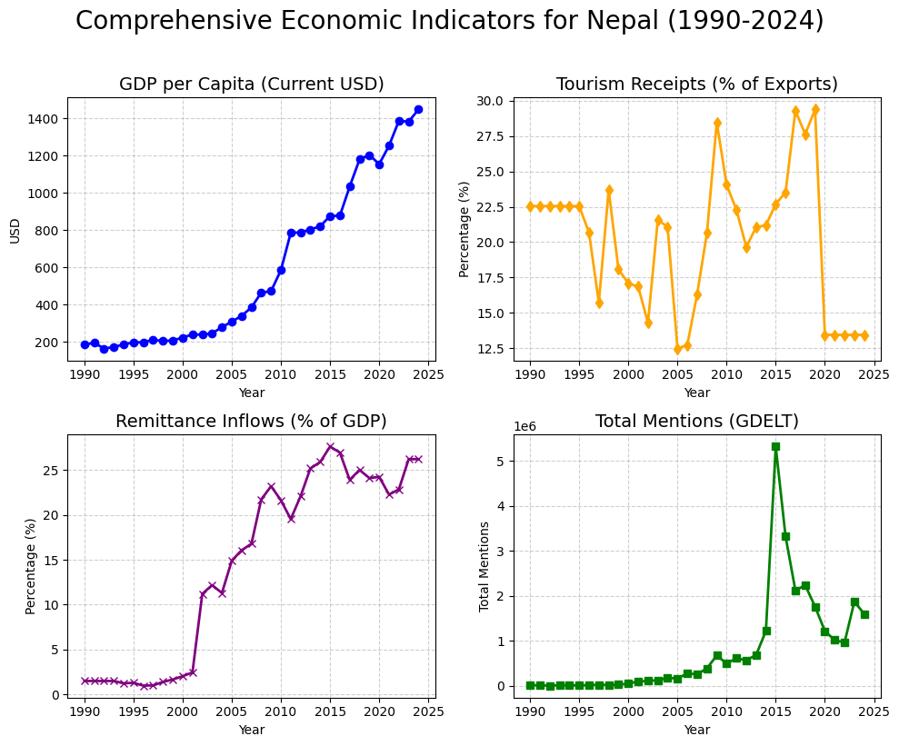
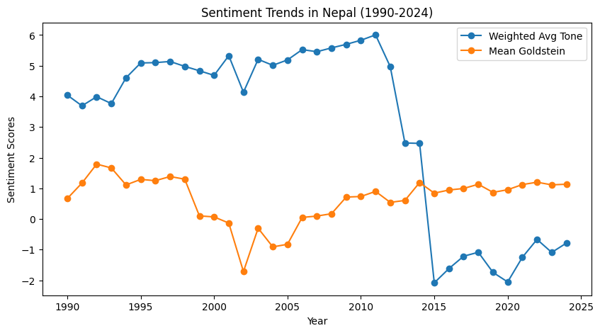
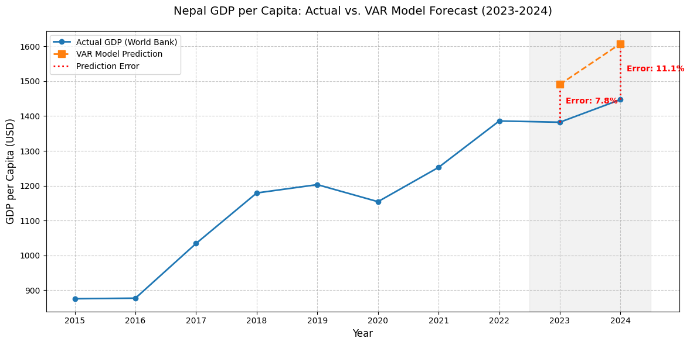
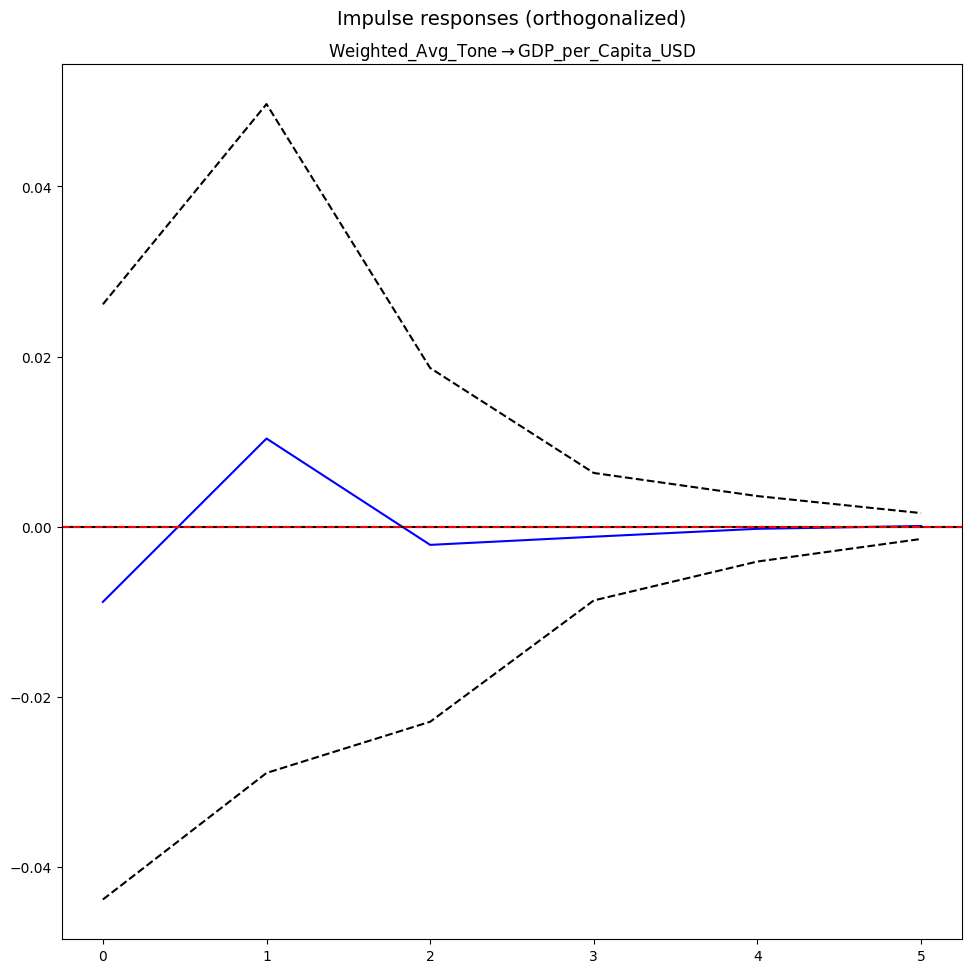

A Time-Series Analysis of Nepal using GDELT and World Bank Data
In this study, I utilized a Vector Autoregression (VAR) model to capture the complex, bidirectional relationships between economic indicators and news sentiment. Unlike simple regression, VAR treats every variable as "endogenous," meaning they all influence each other over time.
I implemented a 1-Year Time Lag (Lag 1) for this model. This decision was based on the Akaike Information Criterion (AIC) and Bayesian Information Criterion (BIC) results, which indicated that the most significant predictive power comes from the immediate preceding year. This means the model uses data from year t-1 to predict year t, capturing how last year's sentiment and tourism receipts manifest in this year's economic output.
To understand the economic landscape of Nepal, I analyzed multiple dimensions of national health. Below are the historical trends of the primary indicators I used in my model.

Figure 1: Multi-dimensional trends of Nepal's Economy (1991-2024).

Figure 2: Overlay of GDP Growth and News Sentiment Trends.
OBSERVATIONS: While GDP exhibits smooth growth, news tone is a high-frequency indicator. I observed that news tone often acts as a precursor to social or political shifts that eventually impact long-term economic stability.
I trained the VAR model on historical data up to 2022. I then conducted a multi-step forecast for 2023 and 2024 to test its real-world utility against actual recorded values.

Figure 3: Predicted vs. Actual GDP Performance (Hugging the Trend).
7.86% ERROR
I achieved high precision in capturing the immediate economic trajectory.
8.12% ERROR
The performance remained robust even during my extended forecasting horizon.
7.99% MAPE
Mean Absolute Percentage Error across my test window.
I applied Granger Causality tests to investigate the predictive relationship between Media Tone and the Economy in both directions.
P-VALUE: 0.8792
I found that news sentiment does not possess a statistically significant predictive lead over GDP at this interval.
P-VALUE: 0.4125
Economic growth similarly does not statistically lead to more positive news coverage in this model.

Figure 4: Impulse Response Function (IRF) showing GDP's reaction to a sentiment 'shock'.
My research concludes that in Nepal's context, Population Sentiment is not a causal driver of GDP. The $p$-values of 0.8792 and 0.4125 confirm that the two variables do not have a strong lead-lag relationship at an annual interval.
However, the high predictive accuracy (~8% error) I achieved suggests that while Tone is not a cause, it is a significant feature for stabilizing economic models. Sentiment acts as a real-time signal of the environment, aiding in the accurate mapping of economic momentum.